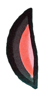
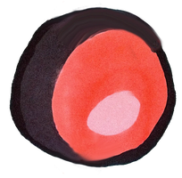
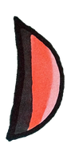
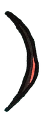
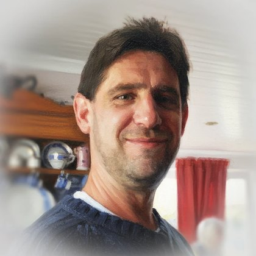

Michael Whyle




Writer · Editor · GenAI Filmmaker
I write and edit for AI-first brands. My work spans social and campaign copy, newsletters, thought leadership, press releases and scripts, alongside award-winning GenAI film.
Fifteen years of writing across technology, energy, healthcare and finance give the work its range. Four years of hands-on generative practice give it its edge. At Pencil, I turn a fast-moving product into clear, accurate copy that clients and colleagues rely on.
- Email
- mikewhyle@gmail.com
- Mobile
- +27 61 655 4726
- Portfolio
- portfolio.mikewhyle.com
www.mikewhyle.com
- LinkedIn
- linkedin.com/in/mikewhyle
- Based in
- Cape Town, South Africa
iExperience
GenAI Writer
Pencil, The Brandtech Group’s generative AI platform for brands
2026 – Present
- Custodian of tone for all marketing social copy: The Pencil Perspective podcast, Humans of Pencil and the bi-weekly product digest on LinkedIn.
- Write and publish The News Drop, Pencil’s weekly AI news digest on LinkedIn: 30+ editions since March 2026.
- Head writer of Pencil’s annual trends report, from thesis to approved copy.
- Write website copy, including enterprise landing pages and competitor comparison pages optimised for SEO and AEO.
- Write and design prompting guides and playbooks, including the Pencil Prompting Playbook for image and video.
- Keep an extensive AI-first SaaS Help Centre in step with the product through an agentic pipeline I designed, with a human review of every change.
Recognition · 2026
Kalimba GenAI film
Shortlisted from 400+ entries in The Brandtech Group GenAI Film Competition and awarded $1,000. An Afrofuturist mockumentary about a South African innovator who finds a way to measure and record consciousness.
AI Strategy Consultant & Content Director
Freelance, Cape Town
2025 – 2026
- Led AI adoption strategy and content creation for healthtech start-ups and creative agencies, translating emerging AI capabilities into practical business applications.
- Developed an AI transformation framework for TQ Group, a marketing agency: cost-benefit analysis showing around 80% cost reduction across video production, a scenario-based adoption roadmap and “centaur model” principles for human-AI creative collaboration.
- Delivered writing, visual storytelling, design, branding and investor collateral for Dr Brian Levy’s healthtech portfolio (Medtalkz, TravelMedz, TwinTech).
iiSelected Work
The AI detector dilemma 2025
An opinion feature for Gadget on why AI detectors fail, and what educators and employers can do instead.
Op-eds in the press 2023–24
Ghostwritten for Kearney, Scatec and SAPVIA; published in the Sunday Times, Engineering News and IOL Business Report.
Blood, Books and Bots 2025
An essay on the true origins of AI, from cave art to GenAI.
Wish Fish 2026
A solo-made GenAI fairy tale about a wish-granting fish that takes every wish literally. Script, direction, design, sound and score.
iiiCapabilities
- Copywriting, editing and tone of voice
- Press releases and thought leadership
- Content strategy, SEO and GEO
- Scripts for film, video and audio
- Technical and research translation
- Enablement, playbooks and documentation
- AI workflow, agent and prompt design
- Art direction for GenAI image and film
Michael Whyle
Writer · Editor · GenAI Filmmaker

Technical Writer
Deep Atomic, Swiss start-up pioneering modular nuclear energy and data centre infrastructure
2024 – 2025
- Shaped the company’s public narrative and tone of voice from inception, aligning it with global clean energy and digital infrastructure trends.
- Translated complex nuclear technologies into clear, accessible content for technical and non-technical audiences, from user journeys to knowledge bases.
- Developed white papers, investor decks, regulatory submissions and internal knowledge bases, collaborating with nuclear engineers, policy experts and software developers.
Senior Content Writer
Alkemi Collective, award-winning integrated marketing and PR agency
2023 – 2024
- Spearheaded SEO content strategy for diverse B2B businesses, including blue-chip clients: press releases, op-eds, thought leadership, white papers and digital assets for integrated campaigns.
- Wrote for clients including Kearney, Scatec, Virgin Active and Radisson RED, with work published in the Sunday Times, Engineering News, IOL Business Report and Bizcommunity.
- Ran team enablement sessions on AI adoption and led knowledge-sharing on writing and storytelling in the era of AI.
- Managed concurrent deadlines in a fast-paced environment, collaborating with subject matter experts and creative teams while preserving quality and brand integrity.
Writer and Editor
MindShift Communications, Cape Town PR, marketing and corporate communications provider specialising in healthcare
2018 – 2022
- Wrote and edited PR, marketing and corporate communications for healthcare clients.
- Produced press releases and thought leadership for a variety of clients.
Writer & Database Consultant
AWARD (Association for Water and Rural Development), a multidisciplinary water-sector NPO
2013 – 2017
- Generated content, data-driven presentations and reports to further the NPO’s mission, and managed its stakeholder databases.
- Developed working proficiency in data structures, database architecture and SQL.
New Media Assistant Editor
Grocott’s Mail, South Africa’s oldest independent newspaper
2011 – 2013
- Managed the CMS back end, produced multimedia content and handled digital advertising (Google AdWords and AdSense).
ivToolkit
- Generative
- Midjourney, GPT Image, Nano Banana Pro, Seedance, Runway, ComfyUI, ElevenLabs, Pencil
- Design & post
- Photoshop, Illustrator, InDesign, Premiere Pro, FL Studio
- Build & automate
- Claude Code, n8n, Unreal Engine 5, HTML, CSS, JavaScript, WebGL shaders, Python, React, Firebase, REST APIs, Git
- Marketing & ops
- SEO and GEO tooling, Google Analytics, CMS and community platforms, Google and Microsoft suites, Monday, Slack
vEducation
Bachelor of Arts, AnthropologyRhodes University · 2008
viInterests
- Music, art, literature and film
- Philosophy
- Social justice
- Running and hiking